Soru 1Cevap: E
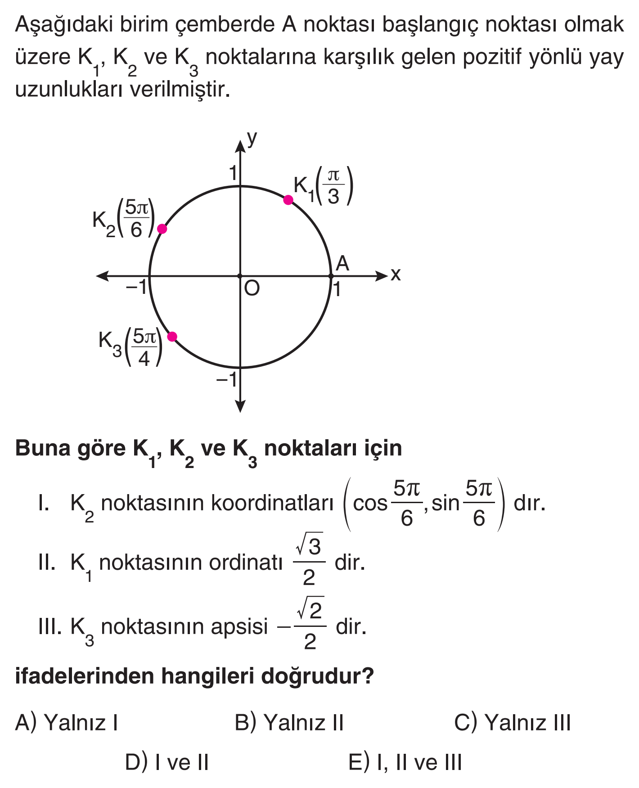
Çözüm
- $K_2$, $\frac{5\pi}{6}$ yayının uç noktası → $\left(\cos\frac{5\pi}{6}, \sin\frac{5\pi}{6}\right)$ ✓.
- $K_1$'in ordinatı $\sin\frac{\pi}{3} = \frac{\sqrt3}{2}$ ✓.
- $K_3$'ün apsisi $\cos\frac{5\pi}{4} = -\frac{\sqrt2}{2}$ ✓. I, II ve III.
Cevap: E
Soru 2Cevap: B
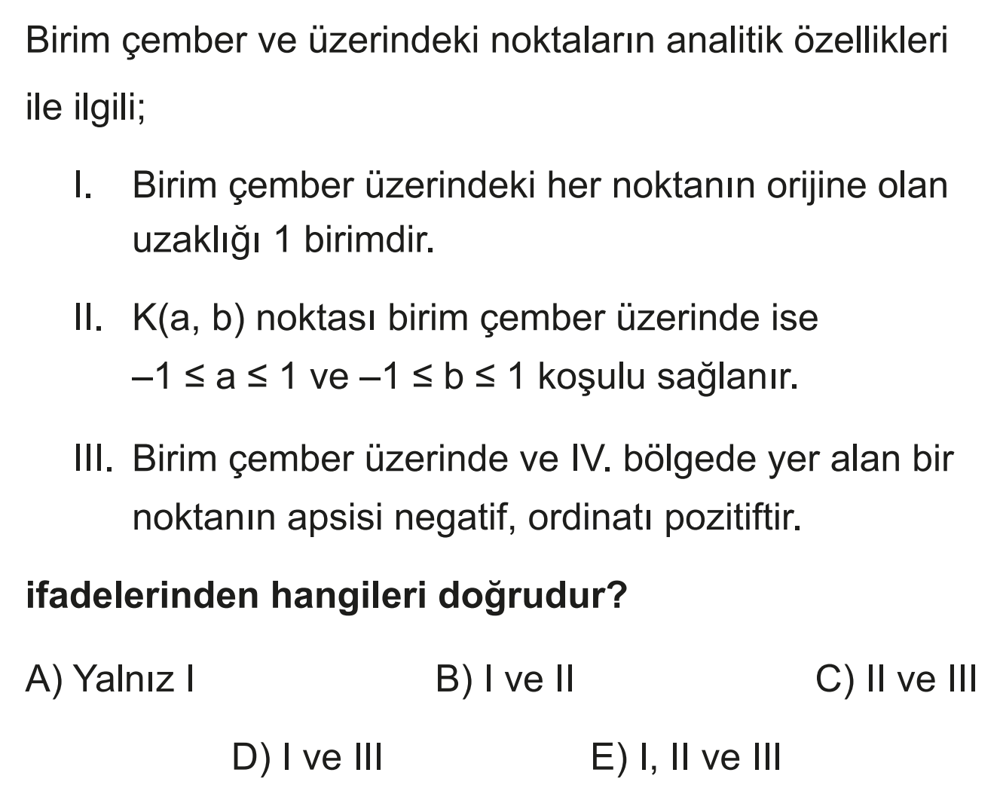
Çözüm
- I: birim çemberde her noktanın orijine uzaklığı yarıçap = 1 ✓.
- II: $a^2 + b^2 = 1$ olduğundan $|a| \le 1$, $|b| \le 1$ ✓.
- III: IV. bölgede apsis pozitif, ordinat negatiftir ✗. I ve II.
Cevap: B
Soru 3Cevap: E
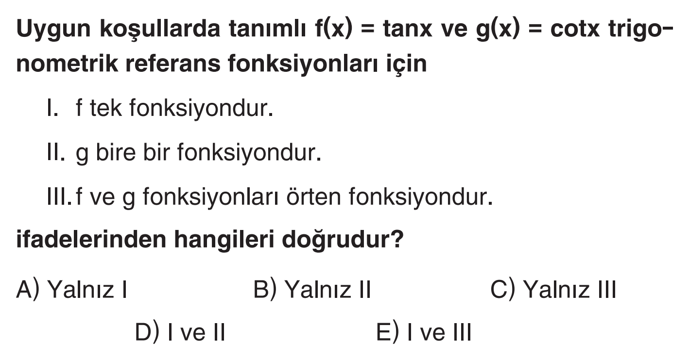
Çözüm
- I: $\tan(-x) = -\tan x$ → tek ✓.
- II: $\cot$ periyodik, aynı değeri tekrar alır → bire bir değil ✗.
- III: ikisinin de görüntü kümesi $\mathbb{R}$ → örten ✓. I ve III.
Cevap: E
Soru 4Cevap: A
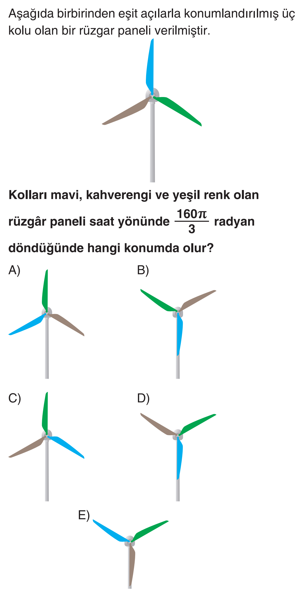
Çözüm
- $\frac{160\pi}{3} = 52\pi + \frac{4\pi}{3}$ → saat yönünde $\frac{4\pi}{3} = 240^\circ$ dönüş.
- Saat yönünde $240^\circ$ = saat yönünün tersine $120^\circ$; kollar arası açı da $120^\circ$.
- Her kol bir sonrakinin (saat yönünün tersindeki) yerine geçer: yeşil yukarı, mavi sol alt, kahverengi sağ alt → A.
Cevap: A
Soru 5Cevap: A
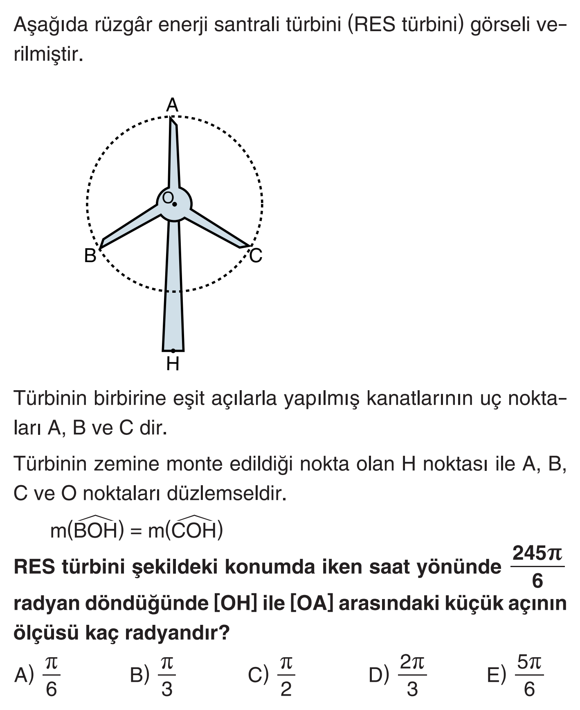
Çözüm
- $\frac{245\pi}{6} = 40\pi + \frac{5\pi}{6}$ → saat yönünde $150^\circ$.
- OA başlangıçta yukarıda ($90^\circ$) → $90^\circ - 150^\circ = -60^\circ$ konumuna gelir.
- OH aşağıda ($-90^\circ$): aradaki açı $30^\circ = \frac{\pi}{6}$.
Cevap: A
Soru 6Cevap: D
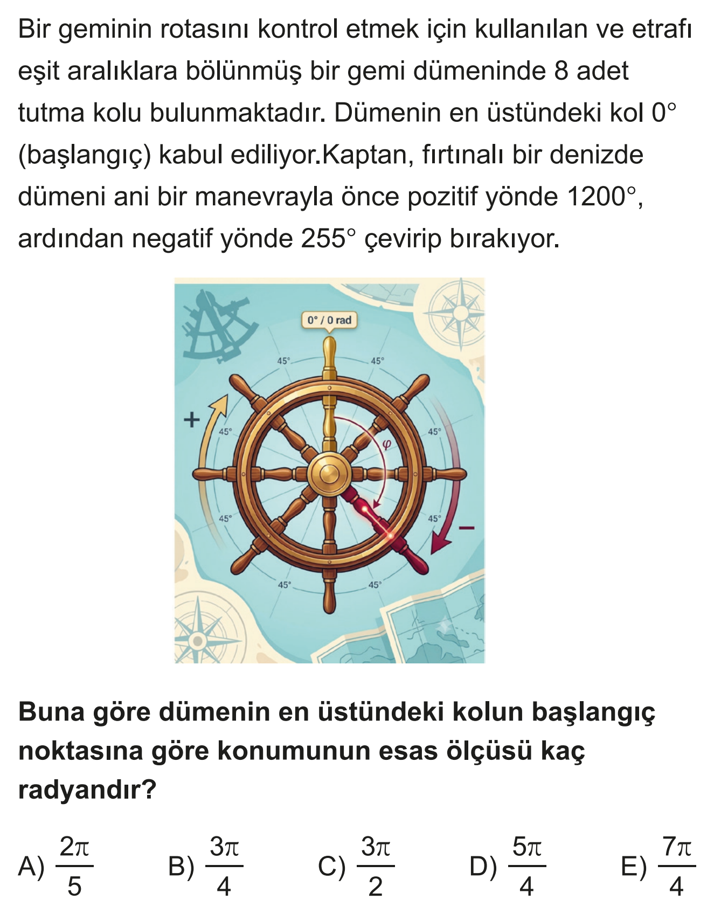
Çözüm
- Net dönüş $1200^\circ - 255^\circ = 945^\circ$.
- $945^\circ - 2\cdot360^\circ = 225^\circ$.
- $225^\circ = \frac{5\pi}{4}$ radyan.
Cevap: D
Soru 7Cevap: A
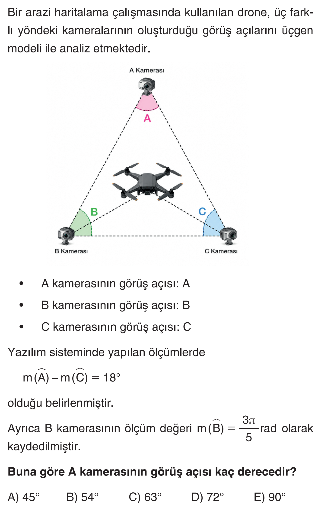
Çözüm
- $m(\hat B) = \frac{3\pi}{5} = 108^\circ$ → $\hat A + \hat C = 72^\circ$.
- $\hat A - \hat C = 18^\circ$.
- Toplanırsa $2\hat A = 90^\circ$ → $\hat A = 45^\circ$.
Cevap: A
Soru 8Cevap: E
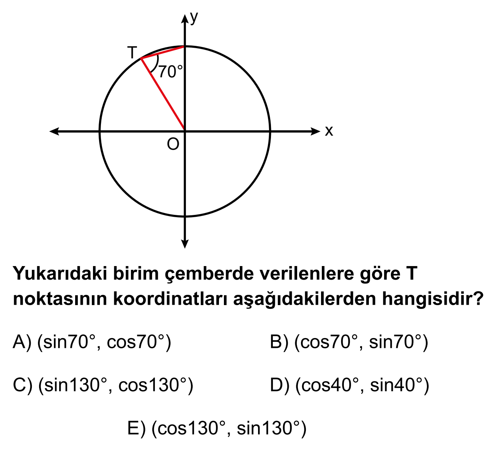
Çözüm
- T ile $(0,1)$ noktası ve O ikizkenar üçgen oluşturur ($|OT| = 1$); taban açıları $70^\circ$.
- Tepe açısı $180^\circ - 140^\circ = 40^\circ$ → OT, y ekseninden $40^\circ$ solda: $90^\circ + 40^\circ = 130^\circ$.
- $T(\cos130^\circ, \sin130^\circ)$.
Cevap: E
Soru 9Cevap: A
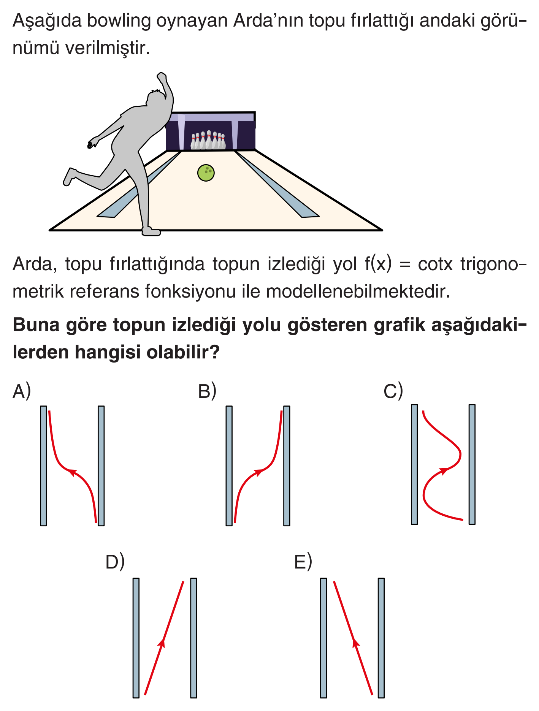
Çözüm
- $\cot x$, $(0,\pi)$'de $+\infty$'dan $-\infty$'a azalır; uçlarda dikey asimptotlar (oluk kenarları) vardır.
- Grafik sol asimptotun yanından başlayıp sağ asimptota doğru iner, ortada yatıklaşır.
- Bu biçim A'dadır.
Cevap: A
Soru 10Cevap: E
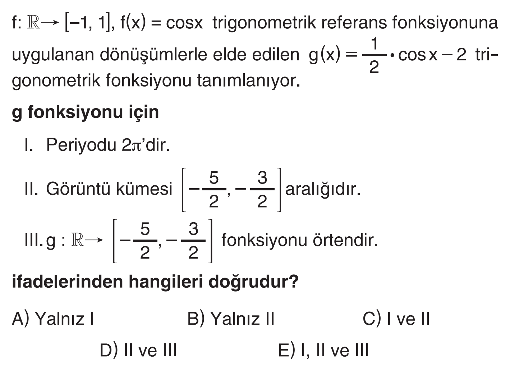
Çözüm
- I: $\cos x$'in periyodu $2\pi$; katsayılar değiştirmez ✓.
- II: $-\frac12 \le \frac12\cos x \le \frac12$ → $-\frac52 \le g(x) \le -\frac32$ ✓.
- III: değer kümesi görüntü kümesine eşit → örten ✓. I, II ve III.
Cevap: E
Soru 11Cevap: B
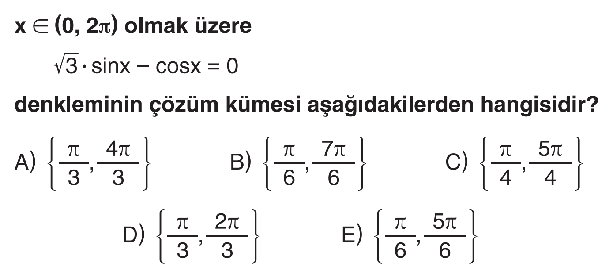
Çözüm
- $\sqrt3\sin x = \cos x$ → $\tan x = \frac{1}{\sqrt3}$.
- $\tan\frac{\pi}{6} = \frac{\sqrt3}{3}$; periyot $\pi$.
- $(0,2\pi)$'de $\left\{\frac{\pi}{6}, \frac{7\pi}{6}\right\}$.
Cevap: B
Soru 12Cevap: A
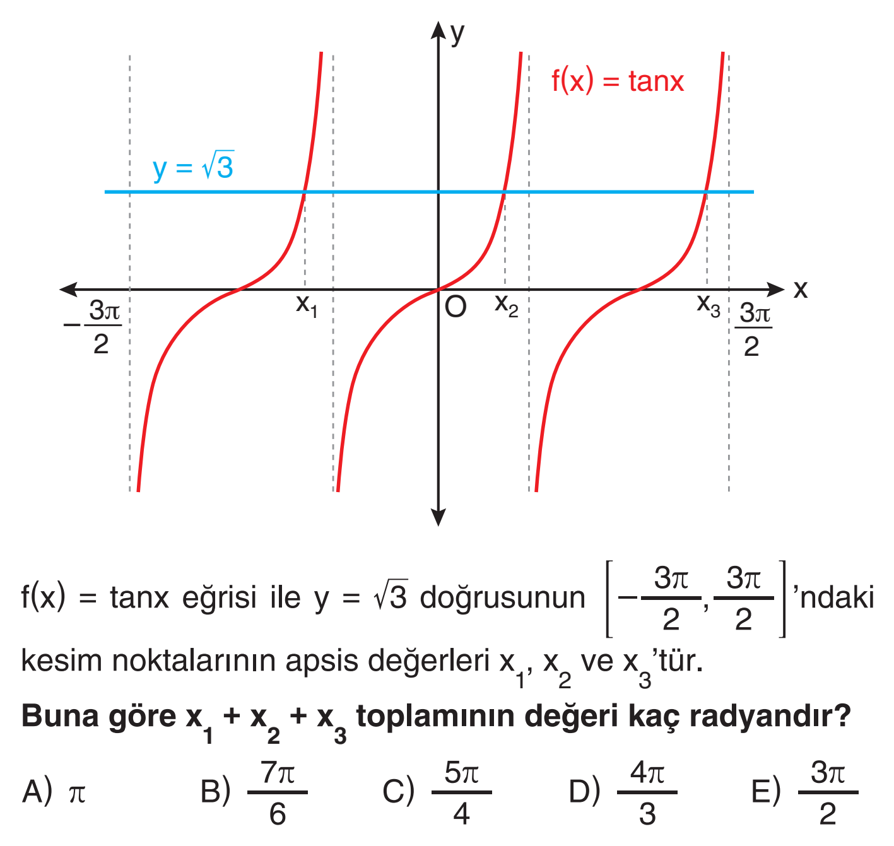
Çözüm
- $\tan x = \sqrt3$ → $x = \frac{\pi}{3} + k\pi$.
- $\left[-\frac{3\pi}{2},\frac{3\pi}{2}\right]$'de $x_1 = -\frac{2\pi}{3}$, $x_2 = \frac{\pi}{3}$, $x_3 = \frac{4\pi}{3}$.
- Toplam $\pi$.
Cevap: A
Soru 13Cevap: B
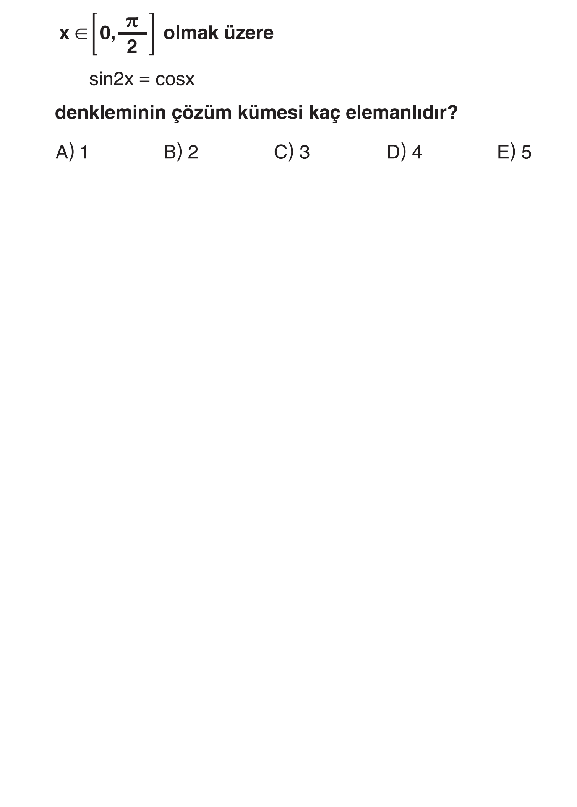
Çözüm
- $\sin2x = 2\sin x\cos x$ → $\cos x(2\sin x - 1) = 0$.
- $\cos x = 0$ → $x = \frac{\pi}{2}$; $\sin x = \frac12$ → $x = \frac{\pi}{6}$.
- $\left[0,\frac{\pi}{2}\right]$'de 2 eleman.
Cevap: B
Soru 14Cevap: B
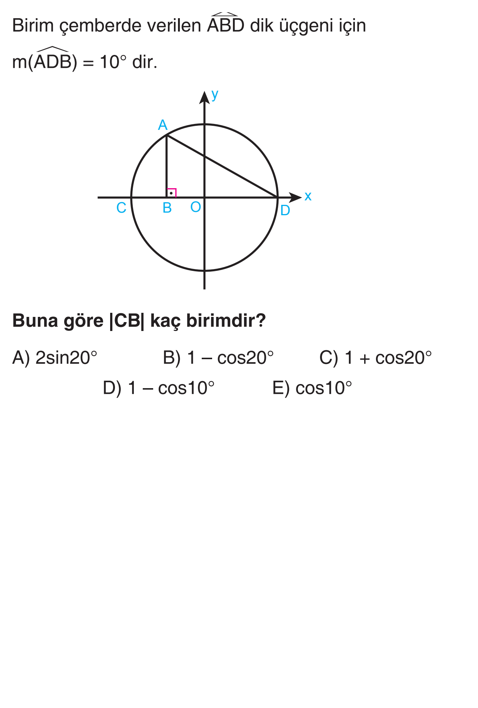
Çözüm
- $\widehat{ADC}$ çevre açı $10^\circ$ → gördüğü yay $20^\circ$ → A noktası $160^\circ$'de.
- B, A'nın x eksenindeki izdüşümü: $B(\cos160^\circ, 0) = (-\cos20^\circ, 0)$.
- $|CB| = -\cos20^\circ - (-1) = 1 - \cos20^\circ$.
Cevap: B
Soru 15Cevap: C
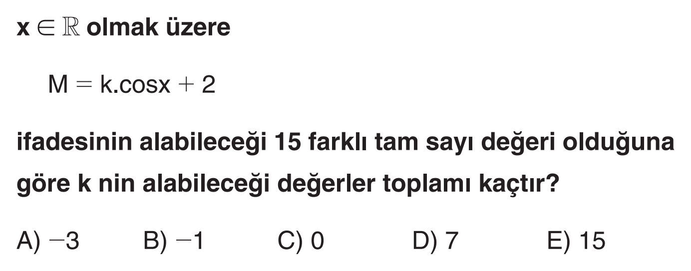
Çözüm
- $-1 \le \cos x \le 1$ → $M\in[2 - |k|, 2 + |k|]$.
- Bu aralıkta 15 tam sayı olması için $2|k| + 1 = 15$ → $|k| = 7$.
- $k = 7$ veya $k = -7$; toplam 0.
Cevap: C
Soru 16Cevap: C
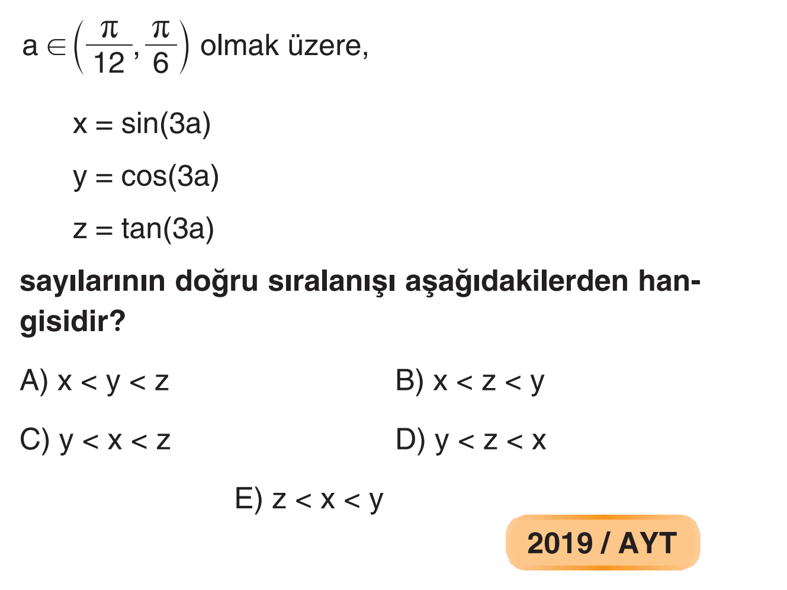
Çözüm
- $a\in\left(\frac{\pi}{12},\frac{\pi}{6}\right)$ → $3a\in\left(\frac{\pi}{4},\frac{\pi}{2}\right)$.
- Bu aralıkta $\cos3a < \sin3a < 1$.
- $\tan3a > 1$ → $y < x < z$.
Cevap: C
Soru 17Cevap: D
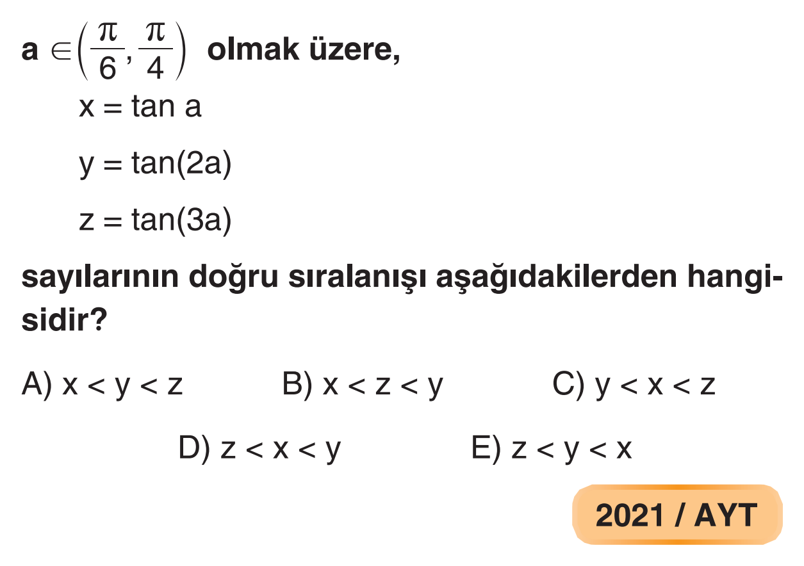
Çözüm
- $a\in\left(\frac{\pi}{6},\frac{\pi}{4}\right)$: $x = \tan a\in\left(\frac{\sqrt3}{3}, 1\right)$.
- $2a\in\left(\frac{\pi}{3},\frac{\pi}{2}\right)$ → $y > \sqrt3$; $3a\in\left(\frac{\pi}{2},\frac{3\pi}{4}\right)$ → $z < 0$.
- $z < x < y$.
Cevap: D
Soru 18Cevap: A
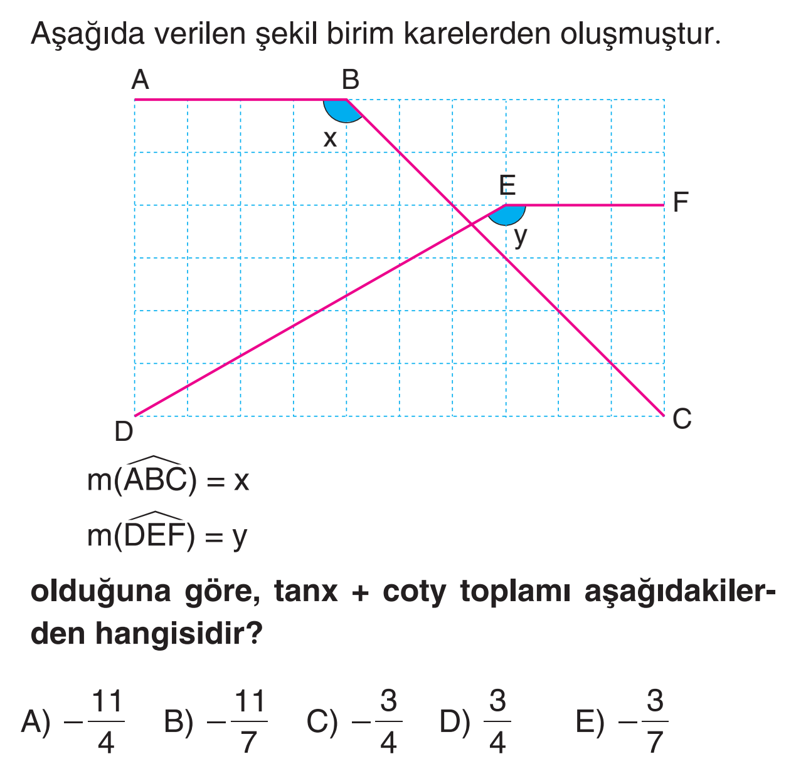
Çözüm
- $x = \widehat{ABC}$ geniş açı: BC doğrusunun yatayla yaptığı dar açının tanjantı kareli zeminden okunur; $\tan x = -\frac54$.
- $y = \widehat{DEF}$ geniş açı: ED doğrusu için $\cot y = -\frac{3}{2}$.
- $\tan x + \cot y = -\frac54 - \frac32 = -\frac{11}{4}$.
Cevap: A
Soru 19Cevap: C
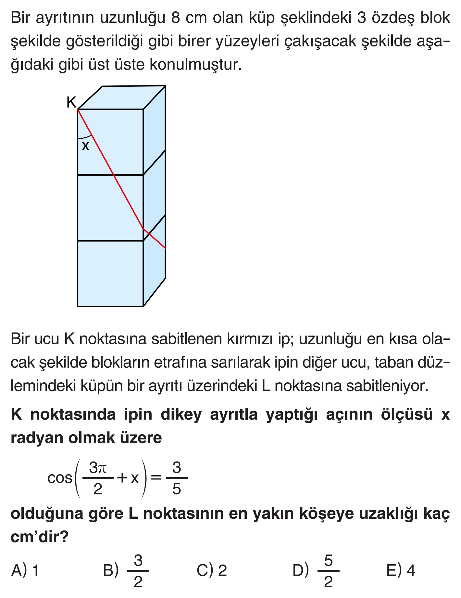
Çözüm
- $\cos\left(\frac{3\pi}{2} + x\right) = \sin x = \frac35$ → $\tan x = \frac34$.
- Yüzeyler açılınca ip düz bir doğru olur: dikeyde $3\cdot8 = 24$ cm iner, yatayda $24\cdot\frac34 = 18$ cm ilerler.
- $18 = 8 + 8 + 2$ → L, üçüncü yüzeyde köşeden 2 cm uzakta.
Cevap: C
Soru 20Cevap: D
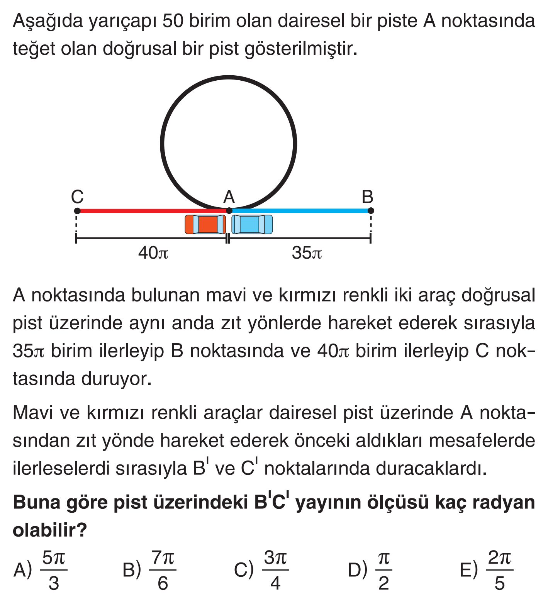
Çözüm
- Yarıçap 50: mavi yay $\frac{35\pi}{50} = 0{,}7\pi$, kırmızı yay $\frac{40\pi}{50} = 0{,}8\pi$ radyan; zıt yönlerde.
- İki yay toplamı $1{,}5\pi$; çember $2\pi$.
- $B'C'$ küçük yayı $2\pi - 1{,}5\pi = \frac{\pi}{2}$.
Cevap: D
Soru 21Cevap: C
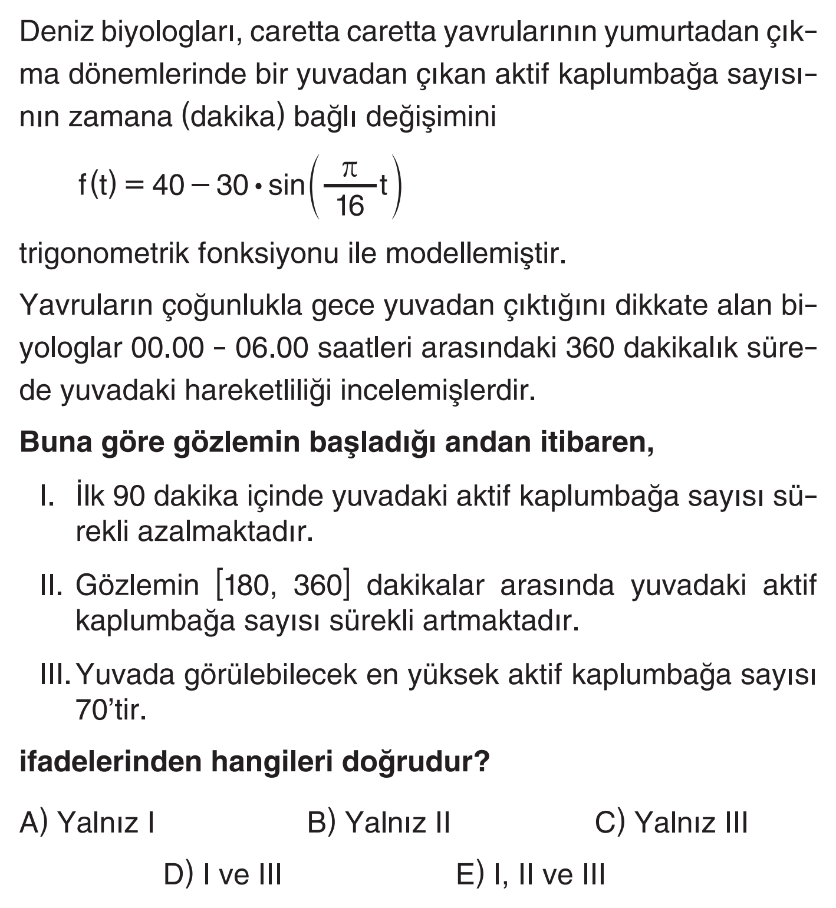
Çözüm
- Periyot $\frac{2\pi}{\pi/16} = 32$ dakika; $10 \le f(t) \le 70$.
- I: 90 dakikada birçok periyot geçer, sürekli azalmaz ✗. II: $[180, 360]$ de birçok periyot içerir ✗.
- III: en büyük değer $40 + 30 = 70$ ✓. Yalnız III.
Cevap: C
Soru 22Cevap: C
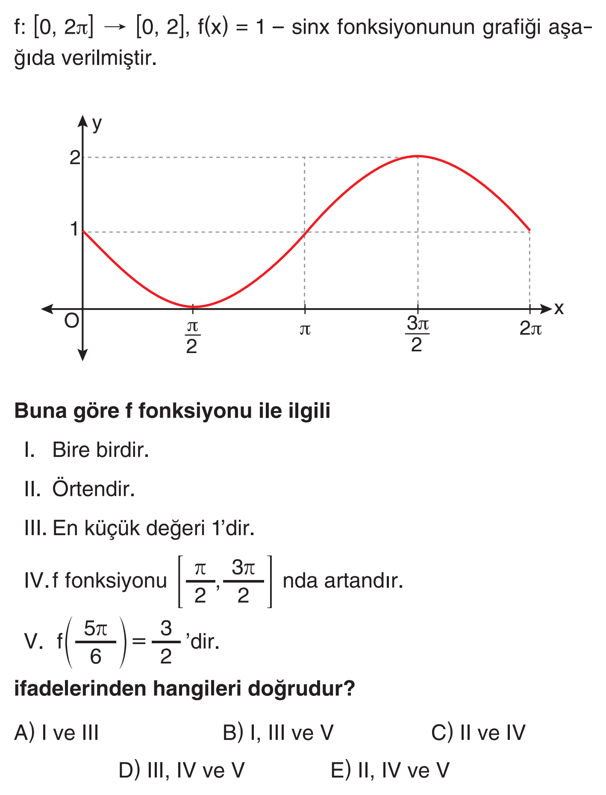
Çözüm
- I: aynı değeri iki kez alır → bire bir değil ✗. II: $[0,2]$'nin her değerini alır → örten ✓.
- III: en küçük değer $f\left(\frac{\pi}{2}\right) = 0$ ✗. IV: $\left[\frac{\pi}{2},\frac{3\pi}{2}\right]$'de artan ✓.
- V: $f\left(\frac{5\pi}{6}\right) = 1 - \frac12 = \frac12$ ✗. II ve IV.
Cevap: C
Soru 23Cevap: E
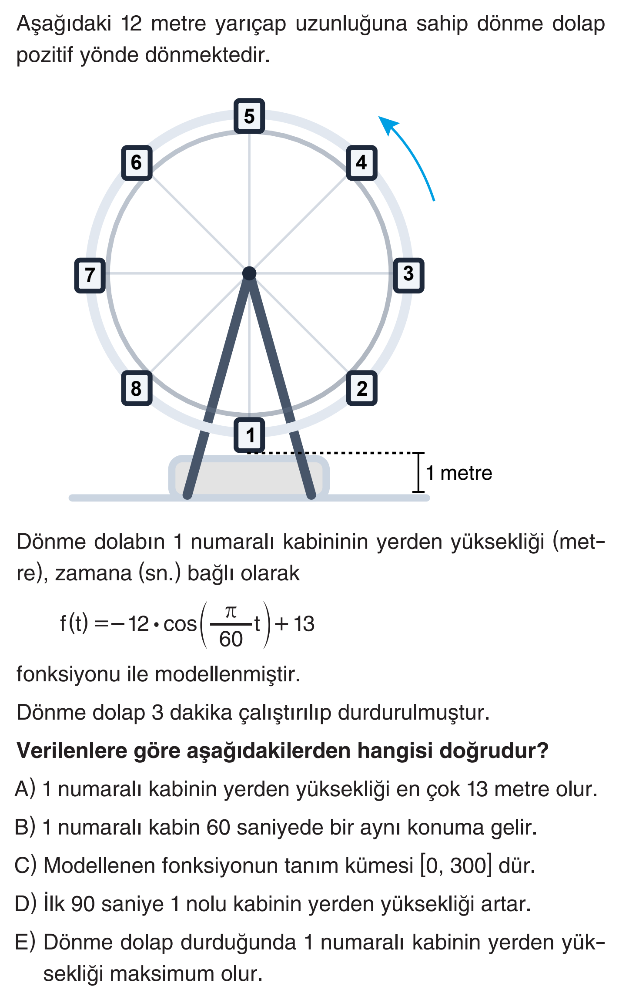
Çözüm
- $f(t) = -12\cos\frac{\pi t}{60} + 13$: $1 \le f \le 25$, periyot 120 sn; 3 dk = 180 sn → tanım kümesi $[0,180]$.
- A (13 m), B (60 sn), C ($[0,300]$), D (60. sn'den sonra azalır) yanlış.
- $f(180) = -12\cos3\pi + 13 = 25$ → durduğunda maksimum yükseklikte (E).
Cevap: E
Soru 24Cevap: C
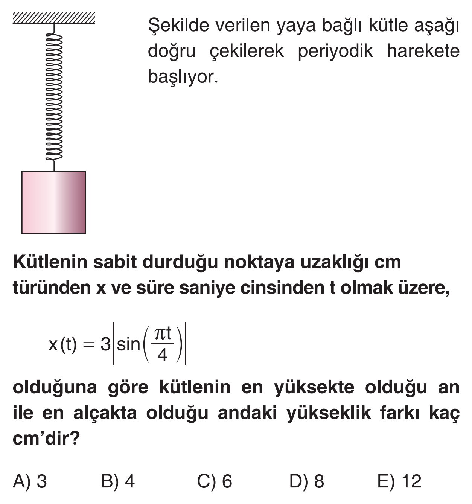
Çözüm
- $x(t) = 3|\sin\frac{\pi t}{4}|$: kütle denge noktasından en çok 3 cm uzaklaşır.
- Salınımda denge noktasının 3 cm üstüne ve 3 cm altına gider.
- En yüksek ve en alçak konum farkı $3 + 3 = 6$ cm.
Cevap: C
Soru 25Cevap: A
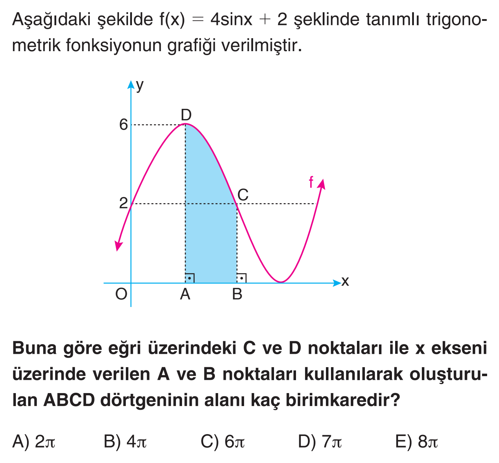
Çözüm
- D maksimum: $x = \frac{\pi}{2}$, $y = 6$; C'de $4\sin x + 2 = 2$ → $x = \pi$.
- A$\left(\frac{\pi}{2}, 0\right)$, B$(\pi, 0)$; ABCD dik yamuk, yükseklik $\frac{\pi}{2}$.
- Alan $\frac{6 + 2}{2}\cdot\frac{\pi}{2} = 2\pi$.
Cevap: A
Soru 26Cevap: C
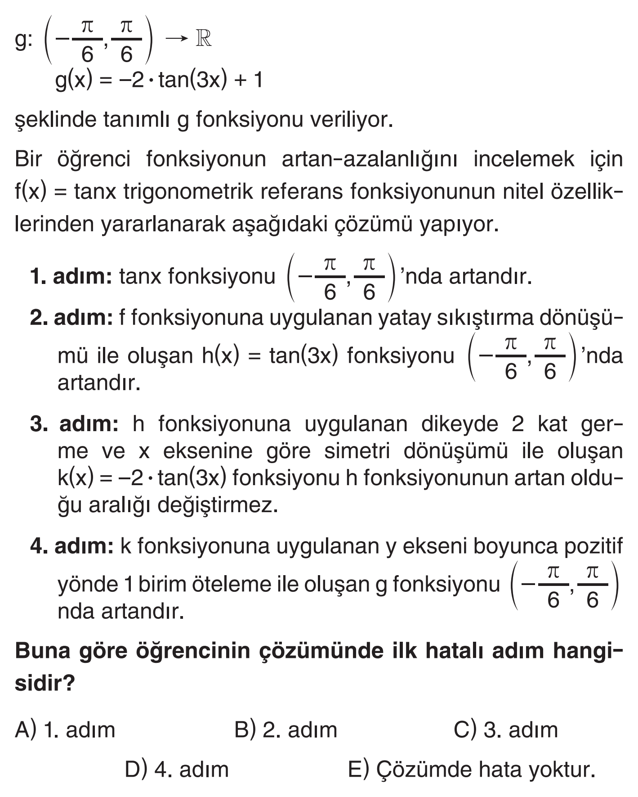
Çözüm
- 1. ve 2. adım doğru: $\tan3x$, $\left(-\frac{\pi}{6},\frac{\pi}{6}\right)$'da artandır.
- 3. adımda x eksenine göre simetri (−) artan fonksiyonu azalana çevirir; \"artan olduğu aralığı değiştirmez\" yanlıştır.
- İlk hatalı adım 3. adım.
Cevap: C
Soru 27Cevap: E
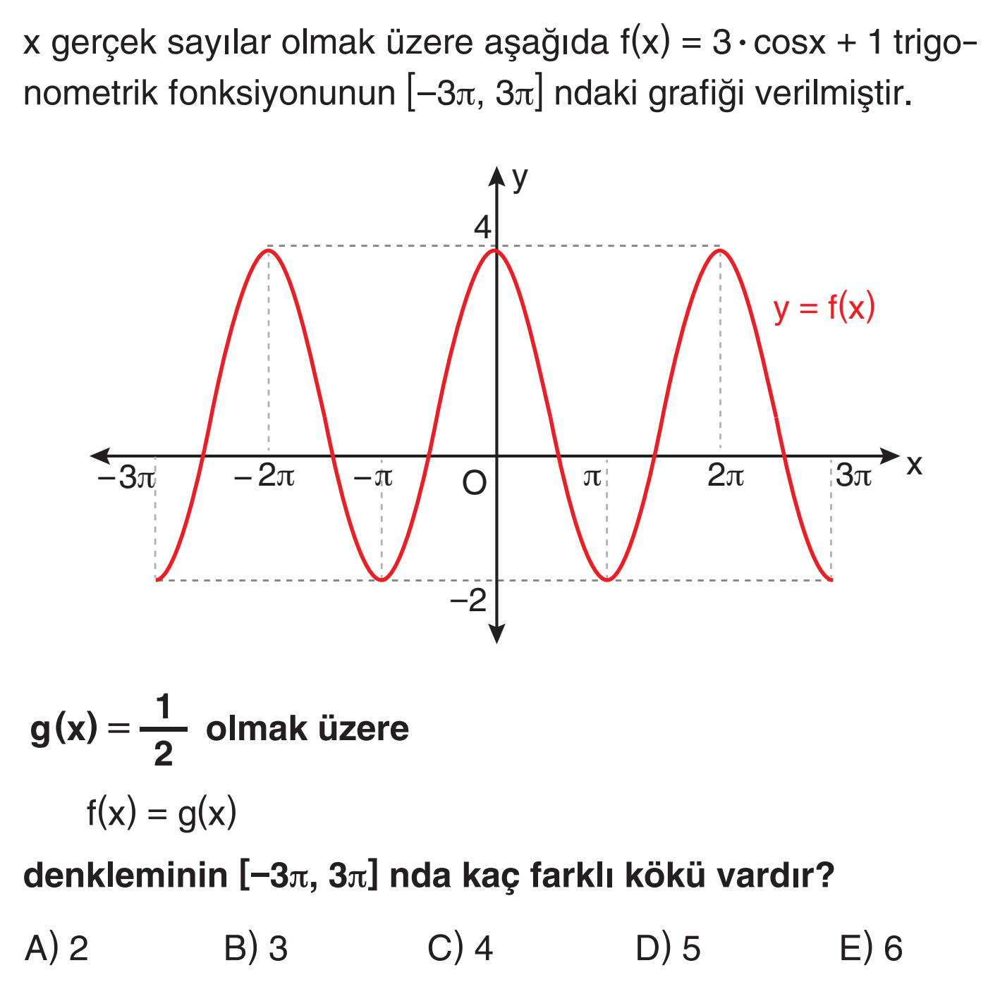
Çözüm
- $3\cos x + 1 = \frac12$ → $\cos x = -\frac16$.
- $-1 < -\frac16 < 1$ → her $2\pi$'lik aralıkta 2 kök.
- $[-3\pi, 3\pi]$ uzunluğu $6\pi$ (3 periyot) → 6 kök.
Cevap: E
Soru 28Cevap: B
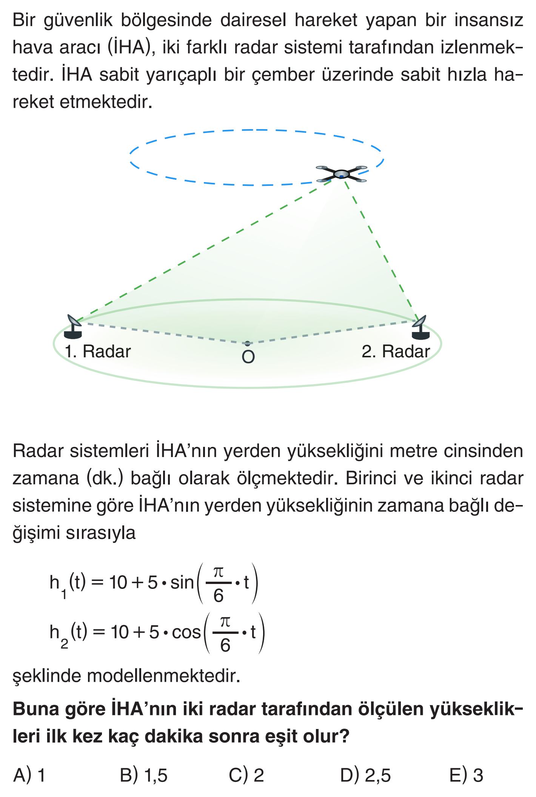
Çözüm
- $h_1 = h_2$ → $\sin\frac{\pi t}{6} = \cos\frac{\pi t}{6}$ → $\tan\frac{\pi t}{6} = 1$.
- İlk pozitif çözüm $\frac{\pi t}{6} = \frac{\pi}{4}$.
- $t = 1{,}5$ dakika.
Cevap: B
Soru 29Cevap: E
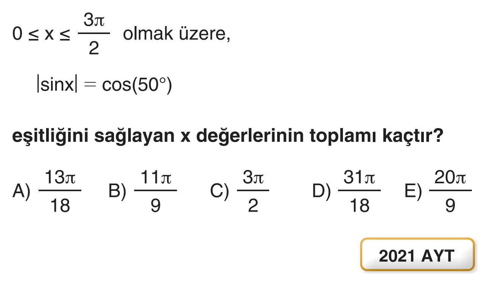
Çözüm
- $\cos50^\circ = \sin40^\circ$ → $|\sin x| = \sin40^\circ$.
- $[0^\circ, 270^\circ]$'de: $40^\circ$, $140^\circ$, $220^\circ$.
- Toplam $400^\circ = \frac{20\pi}{9}$.
Cevap: E
Soru 30Cevap: B
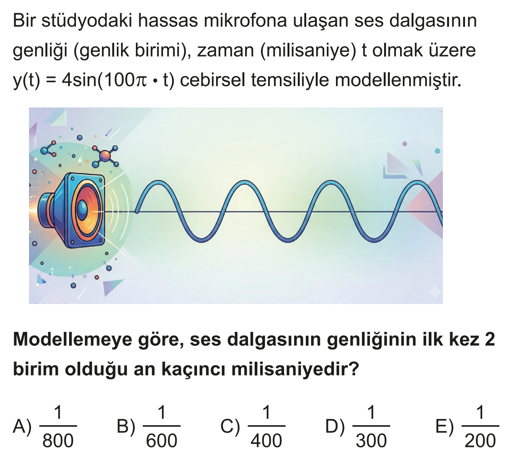
Çözüm
- $4\sin(100\pi t) = 2$ → $\sin(100\pi t) = \frac12$.
- İlk kez $100\pi t = \frac{\pi}{6}$.
- $t = \frac{1}{600}$ milisaniye.
Cevap: B